import matplotlib.pyplot as pltA3: matploblib 기본

1. 강의영상
2. Imports
plt.rcParams['figure.figsize'] = (4.5, 3.0)3. Line plot
A. 기본플랏
- 예시1
x=[1,2,3,4]
y=[1,2,4,3] plt.plot(x,y)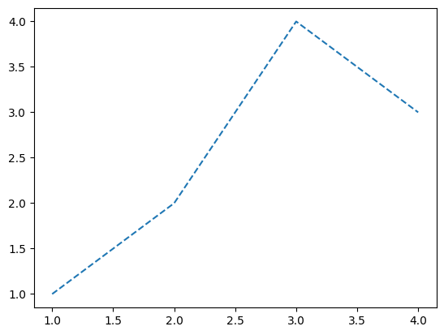
모양변경
- 예시1
plt.plot(x,y,'--')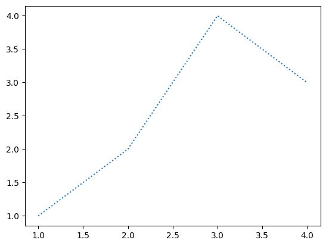
- 예시2
plt.plot(x,y,':')- 예시3
plt.plot(x,y,'-.')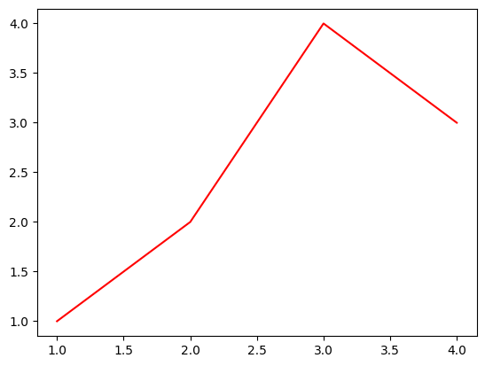
B. 색상변경
- 예시1
plt.plot(x,y,'r')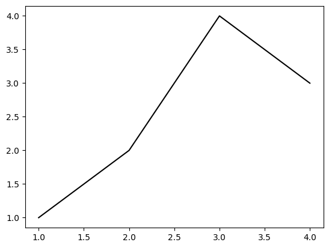
- 예시2
plt.plot(x,y,'k')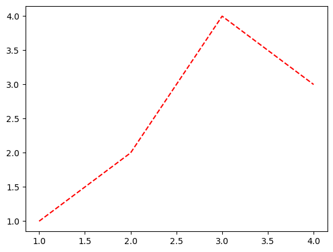
C. 모양 + 색상변경
- 예시1
plt.plot(x,y,'--r')
- 예시2: 순서변경 가능
plt.plot(x,y,'r--')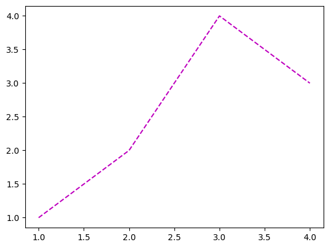
D. 원리?
- r--등의 옵션은 Markers + Line Styles + Colors 의 조합으로 표현가능
ref: https://matplotlib.org/stable/api/_as_gen/matplotlib.pyplot.plot.html
--r: 점선(dashed)스타일 + 빨간색r--: 빨간색 + 점선(dashed)스타일:k: 점선(dotted)스타일 + 검은색k:: 검은색 + 점선(dotted)스타일
- 우선 Marker를 무시하면 Line Styles + Color로 표현가능한 조합은 \(4\times 8=32\) 개
(Line Styles) 모두 4개
| character | description |
|---|---|
| ‘-’ | solid line style |
| ‘–’ | dashed line style |
| ‘-.’ | dash-dot line style |
| ‘:’ | dotted line style |
(Color) 모두 8개
| character | color |
|---|---|
| ‘b’ | blue |
| ‘g’ | green |
| ‘r’ | red |
| ‘c’ | cyan |
| ‘m’ | magenta |
| ‘y’ | yellow |
| ‘k’ | black |
| ‘w’ | white |
- 예시1
plt.plot(x,y,'--m')
- 예시2
plt.plot(x,y,'-.c')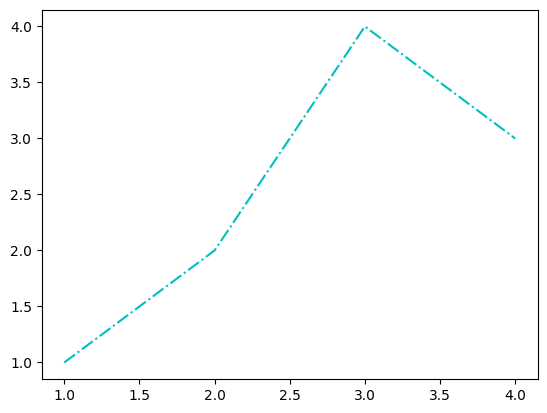
- 예시3: line style + color 조합으로 사용하든 color + line style 조합으로 사용하든 상관없음
plt.plot(x,y,'-.c')
plt.plot(x,y,'c-.')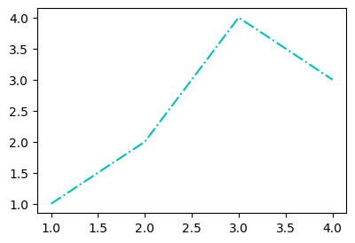
- 예시4: line style을 중복으로 사용하거나 color를 중복으로 쓸 수 는 없다.
plt.plot(x,y,'--:')--------------------------------------------------------------------------- ValueError Traceback (most recent call last) Cell In[17], line 1 ----> 1 plt.plot(x,y,'--:') File ~/Dropbox/02-lec/2026-03-딥러닝/.venv/lib/python3.10/site-packages/matplotlib/pyplot.py:3838, in plot(scalex, scaley, data, *args, **kwargs) 3830 @_copy_docstring_and_deprecators(Axes.plot) 3831 def plot( 3832 *args: float | ArrayLike | str, (...) 3836 **kwargs, 3837 ) -> list[Line2D]: -> 3838 return gca().plot( 3839 *args, 3840 scalex=scalex, 3841 scaley=scaley, 3842 **({"data": data} if data is not None else {}), 3843 **kwargs, 3844 ) File ~/Dropbox/02-lec/2026-03-딥러닝/.venv/lib/python3.10/site-packages/matplotlib/axes/_axes.py:1777, in Axes.plot(self, scalex, scaley, data, *args, **kwargs) 1534 """ 1535 Plot y versus x as lines and/or markers. 1536 (...) 1774 (``'green'``) or hex strings (``'#008000'``). 1775 """ 1776 kwargs = cbook.normalize_kwargs(kwargs, mlines.Line2D) -> 1777 lines = [*self._get_lines(self, *args, data=data, **kwargs)] 1778 for line in lines: 1779 self.add_line(line) File ~/Dropbox/02-lec/2026-03-딥러닝/.venv/lib/python3.10/site-packages/matplotlib/axes/_base.py:297, in _process_plot_var_args.__call__(self, axes, data, return_kwargs, *args, **kwargs) 295 this += args[0], 296 args = args[1:] --> 297 yield from self._plot_args( 298 axes, this, kwargs, ambiguous_fmt_datakey=ambiguous_fmt_datakey, 299 return_kwargs=return_kwargs 300 ) File ~/Dropbox/02-lec/2026-03-딥러닝/.venv/lib/python3.10/site-packages/matplotlib/axes/_base.py:444, in _process_plot_var_args._plot_args(self, axes, tup, kwargs, return_kwargs, ambiguous_fmt_datakey) 441 if len(tup) > 1 and isinstance(tup[-1], str): 442 # xy is tup with fmt stripped (could still be (y,) only) 443 *xy, fmt = tup --> 444 linestyle, marker, color = _process_plot_format( 445 fmt, ambiguous_fmt_datakey=ambiguous_fmt_datakey) 446 elif len(tup) == 3: 447 raise ValueError('third arg must be a format string') File ~/Dropbox/02-lec/2026-03-딥러닝/.venv/lib/python3.10/site-packages/matplotlib/axes/_base.py:167, in _process_plot_format(fmt, ambiguous_fmt_datakey) 165 if fmt[i:i+2] in mlines.lineStyles: # First, the two-char styles. 166 if linestyle is not None: --> 167 raise ValueError(errfmt.format(fmt, "two linestyle symbols")) 168 linestyle = fmt[i:i+2] 169 i += 2 ValueError: '--:' is not a valid format string (two linestyle symbols)

plt.plot(x,y,'rb')- 예시5: 색이 사실 8개만 있는건 아니다.
ref: https://matplotlib.org/2.0.2/examples/color/named_colors.html
plt.plot(x,y,'--',color='lime')- 예시6: 색을 바꾸려면 Hex코드를 밖아 넣는 방법이 젤 깔끔함
ref: https://htmlcolorcodes.com/
plt.plot(x,y,color='#277E41') - 예시7: 당연히 라인스타일도 4개만 있진 않겠지
ref: https://matplotlib.org/stable/gallery/lines_bars_and_markers/linestyles.html
plt.plot(x,y,linestyle='dashed')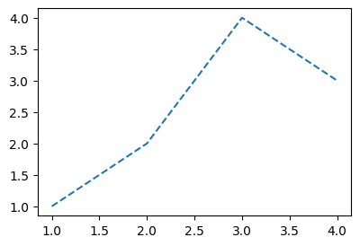
plt.plot(x,y,linestyle=(0, (20, 5)))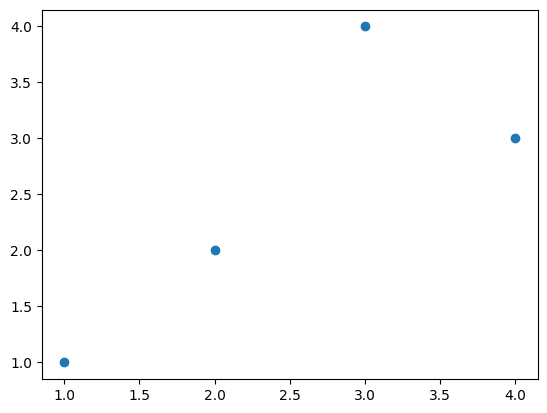
4. Scatter plot
A. 원리
- 그냥 마커를 설정하면 끝!
ref: https://matplotlib.org/stable/api/_as_gen/matplotlib.pyplot.plot.html
| character | description |
|---|---|
| ‘.’ | point marker |
| ‘,’ | pixel marker |
| ‘o’ | circle marker |
| ‘v’ | triangle_down marker |
| ‘^’ | triangle_up marker |
| ‘<’ | triangle_left marker |
| ‘>’ | triangle_right marker |
| ‘1’ | tri_down marker |
| ‘2’ | tri_up marker |
| ‘3’ | tri_left marker |
| ‘4’ | tri_right marker |
| ‘8’ | octagon marker |
| ‘s’ | square marker |
| ‘p’ | pentagon marker |
| ‘P’ | plus (filled) marker |
| ’*’ | star marker |
| ‘h’ | hexagon1 marker |
| ‘H’ | hexagon2 marker |
| ‘+’ | plus marker |
| ‘x’ | x marker |
| ‘X’ | x (filled) marker |
| ‘D’ | diamond marker |
| ‘d’ | thin_diamond marker |
| ‘|’ | vline marker |
| ’_’ | hline marker |
plt.plot(x,y,'o')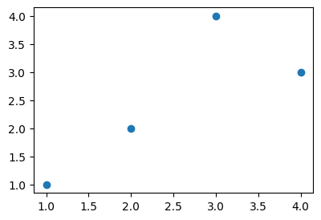
B. 기본플랏
- 예시1
plt.plot(x,y,'.')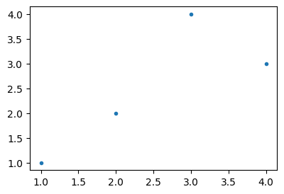
- 예시2
plt.plot(x,y,'x')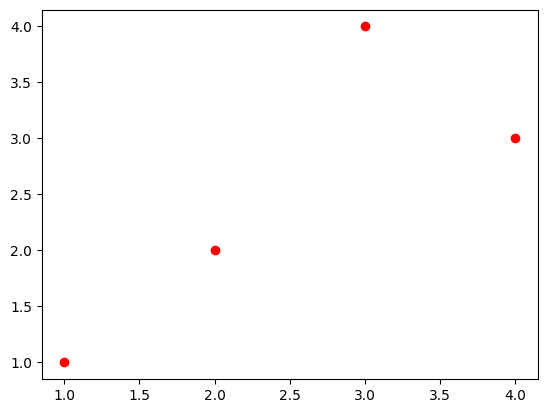
C. 색깔변경
- 예시1
plt.plot(x,y,'or')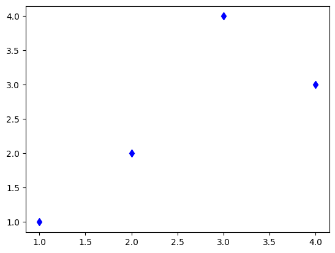
- 예시2
plt.plot(x,y,'db')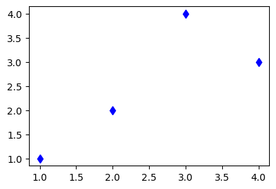
- 예시3
plt.plot(x,y,'bx')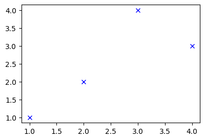
D. dot-connected plot
- 예시1: 마커와 라인스타일을 동시에 사용하면 dot-connected plot이 된다.
plt.plot(x,y,'o-')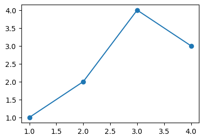
- 예시2: 당연히 색도 적용가능함
plt.plot(x,y,'o--r')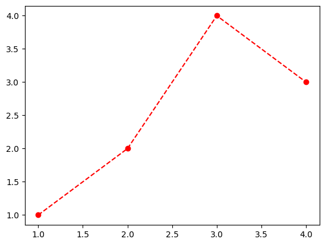
- 예시3: 서로 순서를 바꿔도 상관없다.
plt.plot(x,y,'ro--')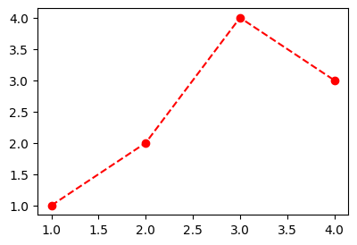